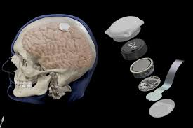

El primer implante cerebral de Neuralink en humanos sufrió un problema
la compañía reveló que varios hilos conectivos del chip se retrajeron del cerebro del sujeto Noland Arbaugh, lo que obstaculizó la velocidad de datos y la efectividad del implante. Pero la compañía dijo que pudo hacer que el implante fuera más sensible para aumentar aún más su rendimiento.

Leer más
INCREIBLE! ¿Sabías que puedes oír el eclipse?
Una nueva tecnología, denominada dispositivo LightSound, desarrollada por investigadores de Harvard, traduce los cambios de luz en sonidos, lo que permite a las personas con discapacidad visual o ciegas vivir el eclipse. Kiki Smith, coordinadora de recaudación de fondos y divulgación de la South East Area Coalition, muestra cómo funciona el dispositivo.
Leer más